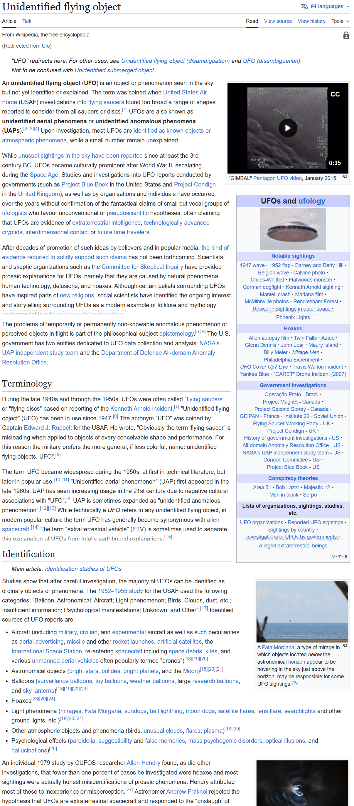

SnipStitch
Fast scrolling screenshot stitching for Windows.
• Vertical scrolling screenshot stitching
• Horizontal stitching mode
• Fully local operation
• No subscriptions
• DPI scaling support
Download Latest Release
